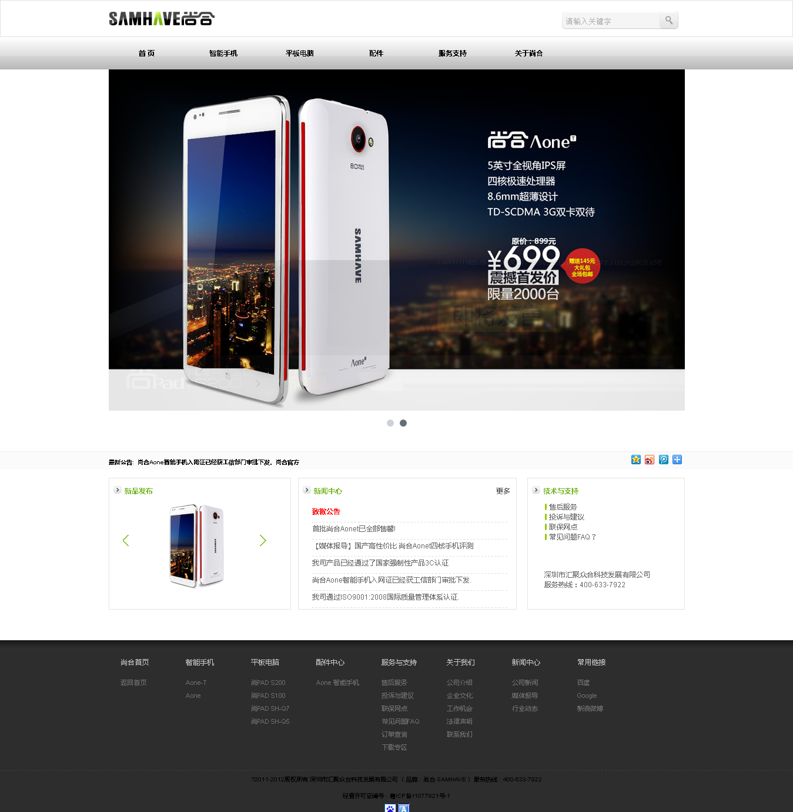
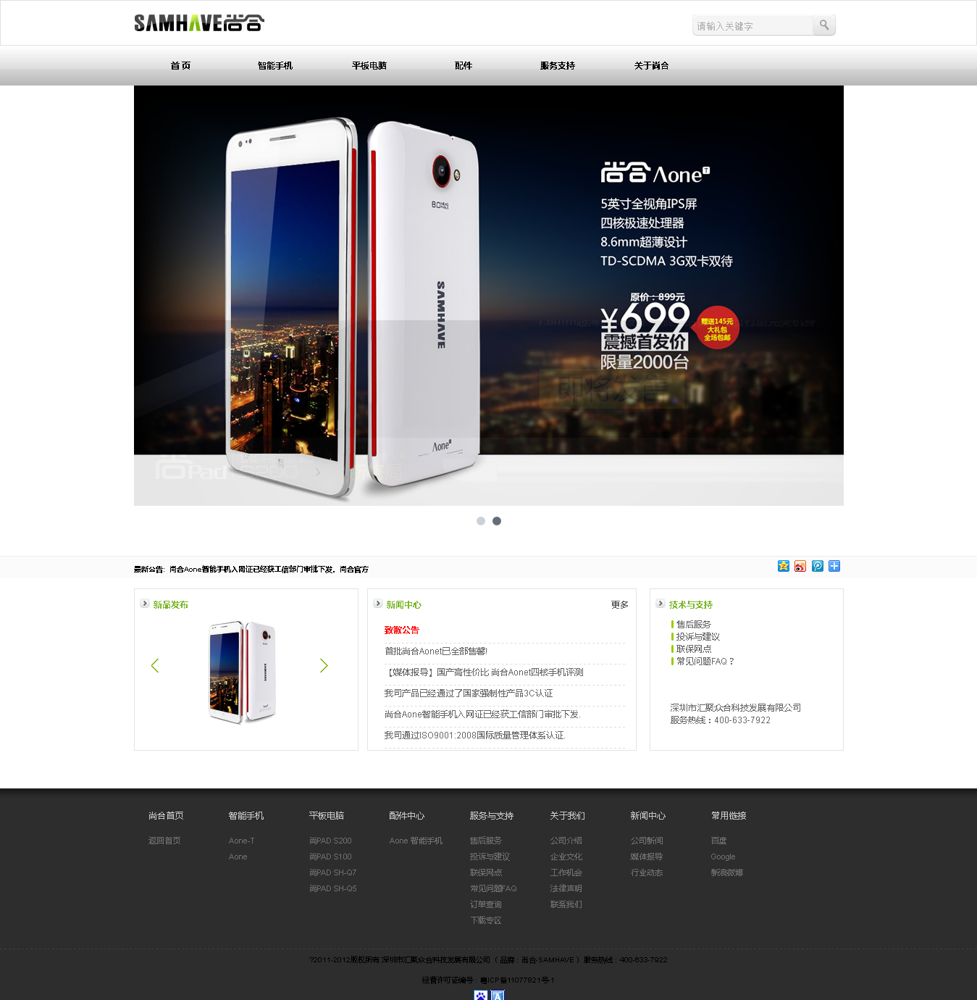
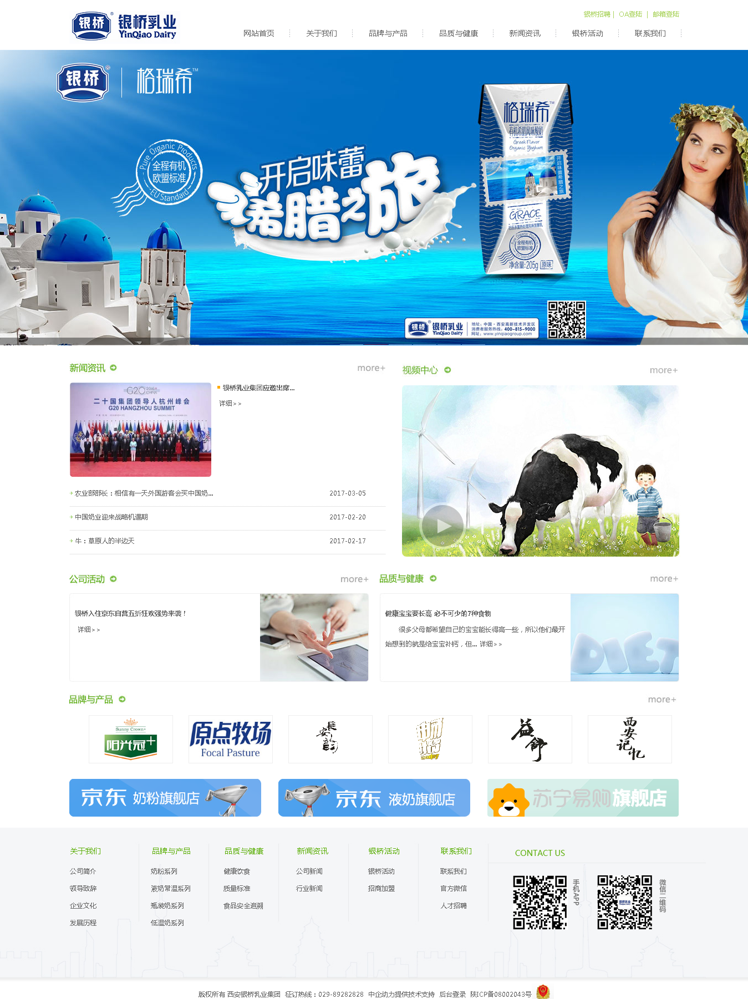
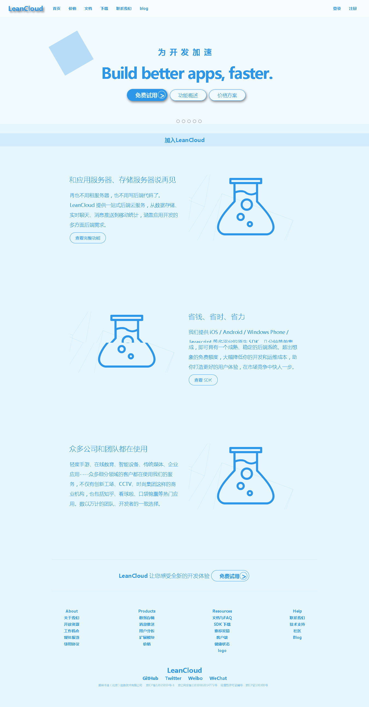
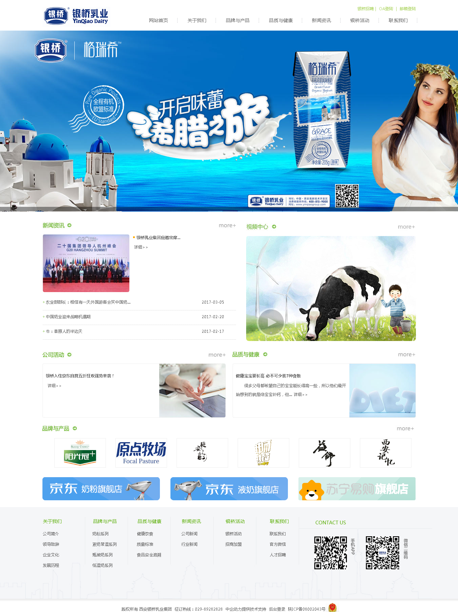
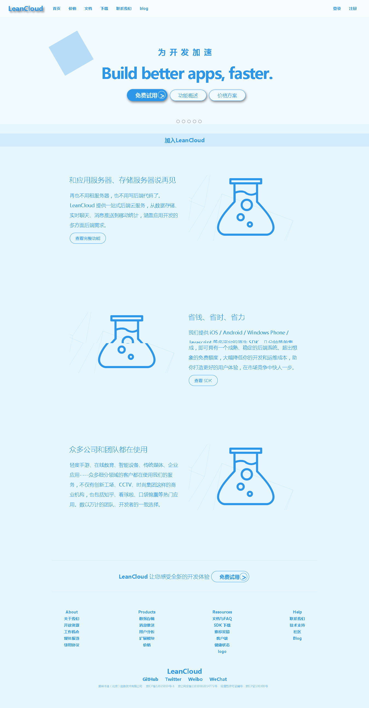
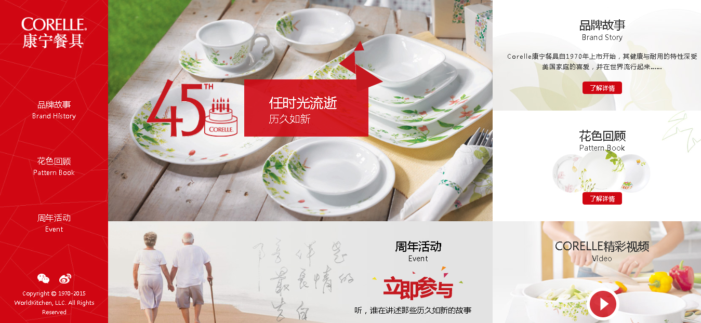
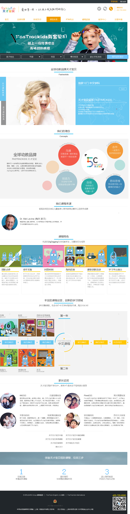
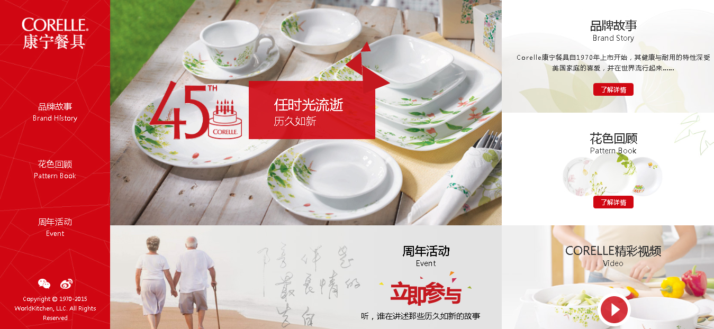
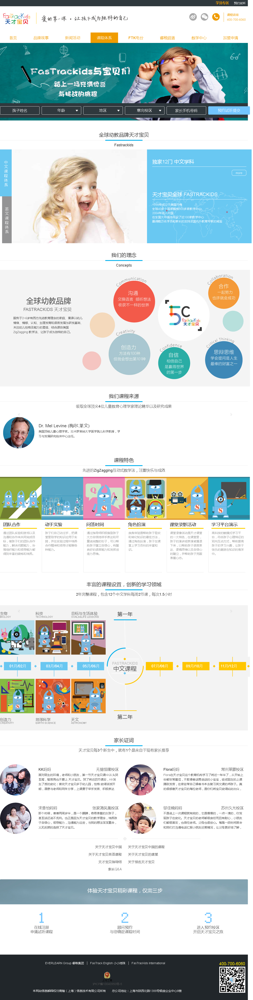

我的资料
My data
姓名 | 朱佩 性别 | 女 出生 | 1992.01 居住地 | 陕西省西安市 学历 | 本科 专业 | 信息管理与信息系统 英语水平 | CET-4 求职意向 | web前端 姓名 | 朱佩
性别 | 女
出生 | 1992.01
居住地 | 陕西省西安市
学历 | 本科
专业 | 信息管理与信息系统
英语水平 | CET-4
求职意向 | web前端
两年多的工作中， 我掌握了HTML5，CSS3，Javascript及jQuery等基本前端开发技术，可以熟练使用div+css进行网页的排版，能够使用原生js和Jquery完成页面的渲染交互，同时能很好的根据需求完成可用性、易用性、良好交互性和用户体验的网页。在实际项目里，对Bootstrap、echarts等开发框架，以及一些sdk的实际使用提高了我的技术水平及动手能力。利用空余时间也学习了一些当前热门的前端框架，扩展了自己的知识面。
工作培养了我独立思考和自主学习的能力，让我变得更有耐心，思维更活跃，在压力和困难面前我有很好的分析能力和解决问题的能力。团队的开发项目让我对于团队之间的配合效率有了清楚的认识，培养了我的团队精神，能够很好的与同事进行充分的沟通，完成相互间的协作。
我的技能
My skills
HTML5
CSS3
Java Script
JQUERY
BOOTSTRAP
熟悉HTML5，CSS3等Web前端开发技术，使用DIV+CSS能手写符合W3C标准，兼容多种浏览器前端页面代码；
熟悉Web响应式布局，熟悉响应式框架Bootstrap，能让网页适配多分辨率屏幕；
能够熟练使用原生的JavaScript或jQuery完成页面交互和功能的实现；
熟悉移动web开发；
熟悉通过Ajax与后台API交互，熟悉json数据格式；
能够熟练使用Svn、git等工具控制项目版本；
了解canvas绘图，了解echarts，Konva等图像框架；
了解AngularJs 、nodeJs等流行框架；
了解前端模块化开发，了解seajs等模块化开发框架；
我的作品
My works

 向右(下)拖动...
向右(下)拖动...
 
 
联系我
Contact me
| 18729568384| 962828951| zp9201@yeah.net我的名片